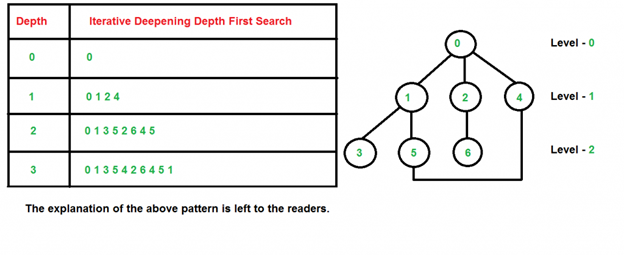

Goals
- Explore maze using DFS, BFS, Dijkstra, or A* (show that your robot can do different maze configurations, we expect at least one of them to be a minimum size of 4x5).
- Update the GUI while exploring.
Our algorithm
To explore the maze, we decided to not use Depth First Search (DFS) or Breadth First Search (BFS). Instead, we used a combination of both, known as Iterative Deepening Search (IDS). This algorithm combines the spatial efficiency of DFS and the speed of BFS for those nodes that are closer to the root. Additionally, it uses less memory, which is instrumental at this point of the course, since we have a considerable amount of code already. For more details, you can visit this website.
Translated to robot-world, that would mean that every time we call IDS, DFS is limited to a certain depth. Hence, the algorithm performs DFS with a BFS flavour. Refer to the image below for a graphical representation of how the nodes would be explored:
Here's some of the code:
// the setup function runs once when you press reset or power the board
void setup() {
// initialize digital pin LED_BUILTIN as an output.
pinMode(LED_BUILTIN, OUTPUT);
}
// the loop function runs over and over again forever
void loop() {
digitalWrite(LED_BUILTIN, HIGH); // turn the LED on (HIGH is the voltage level)
delay(1000); // wait for a second
digitalWrite(LED_BUILTIN, LOW); // turn the LED off by making the voltage LOW
delay(1000); // wait for a second
}
Behold our maze exploration capabilities:
We actually got it to work before we left the lab, but couldn't get a proper video of navigation with radio transmission. If you check back tomorrow you'll see it. #groupof3 #prettyplease
Radio communication
Most of the radio communication was already done in Lab 3. See below how our robot is also capable of updating the GUI through the remote Arduino station via radio communication.
Click here to see full code for this part